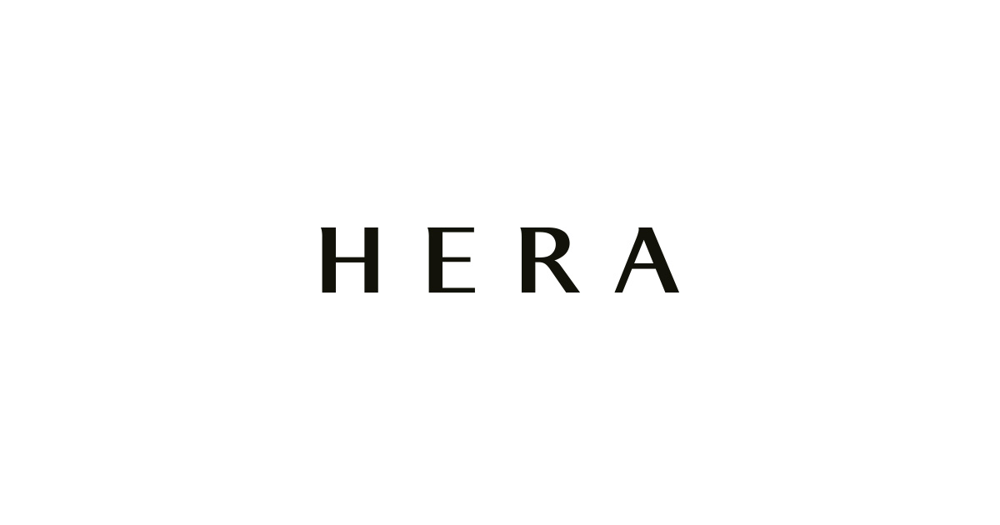

홈 > 브랜드 매거진 > 헤라
헤라
헤라(HERA)는 아모레퍼시픽의 프리미엄 화장품 브랜드로, 1995년 론칭했다.
산업 분야 뷰티·퍼스널케어 · 공개 등급 자료 기반 · 브랜드 평가 4.3 ★

한눈에 보는 브랜드
헤라는 아모레퍼시픽이 1995년 10월 선보인 럭셔리 메이크업 브랜드다. 2011년 배우 신민아를 얼굴로 내세운 리포지셔닝으로 출시 17년 만에 백화점 매출 상위권에 진입했고, 2012년 자외선 차단 쿠션의 폭발적 흥행이 두 번째 도약을 이끌었다.
오늘날에는 블랙 쿠션을 축으로 국내 쿠션 시장 1위를 지키며 미국·일본으로 무대를 넓힌 '서울 뷰티'의 대표 주자로 자리한다.
브랜드 관점
헤라의 차별점은 같은 그룹의 설화수가 동양 미학과 스킨케어를 앞세우는 사이, 메이크업과 베이스 완성도로 럭셔리를 정의했다는 데 있다. 디올·맥이 파리·뉴욕의 무드를 파는 반면 헤라는 '서울'이라는 도시 정체성을 핵심 자산으로 삼는다.
빠르게 변하는 메트로폴리스의 감각, 당당함과 세련됨이 공존하는 'Ambivalent Beauty'를 브랜드 언어로 번역해 K-뷰티를 가성비가 아닌 럭셔리로 끌어올렸다. 최근 변화의 함의는 분명하다.
일부 고기능 크림과 립 가격을 낮춘 '실용적 럭셔리' 노선으로 진입 장벽을 조정하는 동시에, 블랙핑크 제니를 글로벌 앰배서더로 세워 미국 아마존과 일본 백화점에서 인지도를 키웠다. K-뷰티 수출이 미국에서 중국을 제치고 1위로 올라선 흐름 속에서, 헤라는 스킨케어 일색이던 한류 화장품의 외연을 럭셔리 메이크업으로 확장하는 시험대에 서 있다.
시작과 성장
1995년 출범 당시 한국 화장품 시장은 수입 명품과 로드숍이 양극화되던 시기였고, 헤라는 그 사이의 비어 있던 국산 프리미엄 메이크업 자리를 겨냥했다. 출범 초기에는 자매 브랜드와 유사한 메이크업 패턴을 따르다 2000년 봄을 기점으로 독자적 색을 세웠다.
첫 전환점은 2011년 신민아를 모델로 한 리포지셔닝으로, 출시 17년 만에 백화점 매출 상위권에 처음 올랐다. 두 번째 전환점은 2012년 자외선 차단 쿠션으로, 약 11개월간 6초마다 한 개꼴로 팔리며 쿠션 강자 이미지를 굳혔다.
이후 블랙 쿠션이 바통을 이어받아 국내 1위를 장기 수성했고, 2024년 무렵 누적 1천만 개를 넘어섰다. 확장은 2025년 들어 가속됐다.
일본 백화점 채널에 새로 들어가고 미국 시장은 아마존을 거점으로 공략하며, 리플렉션 라인을 앞세워 글로벌 베이스 메이크업 무대로 발을 넓혔다.
브랜드 아이덴티티
헤라가 내세우는 핵심 가치는 '서울리스타'다. 자기주도적이고 능동적인 태도로 도시의 에너지를 자신만의 아름다움으로 빚어내는 한국 여성을 가리키며, 현명함과 열정이라는 상반된 가치를 동시에 품는 'Ambivalent Beauty'를 철학으로 둔다.
비주얼 아이덴티티는 절제된 블랙과 도회적 미니멀리즘, 정제된 광택을 축으로 한다. 타깃은 자신의 가능성을 제한하지 않는 도시형 여성이며, 보이스는 당당하고 군더더기 없는 어조로 설득보다 자신감을 권한다.
글로벌 앰배서더 제니는 트렌디함과 럭셔리를 겸비한 얼굴로 이 정체성을 세계 무대에 전했다.
제품과 서비스
포트폴리오는 베이스 메이크업, 립, 스킨케어로 나뉜다. 시그니처는 국내 쿠션 1위 블랙 쿠션, 그리고 30시간 지속을 내세운 센슈얼 누드 밤(3.5g, 3만8천원)과 누드 글로스다.
베이스에서는 투명 속광을 강조한 리플렉션 라인이 글로벌 성장을 견인한다. '실용적 럭셔리' 기조 아래 리쥬브네이트 앰플 크림을 10만8천원에서 8만원으로, 센슈얼 파우더 매트 리퀴드를 4만5천원에서 4만원으로 조정했다.
판매 채널은 백화점, 올리브영, 아모레몰 등 온·오프라인과 미국 아마존, 일본 백화점으로 이어진다.
현재 상태
모회사는 아모레퍼시픽이며 본사는 서울 용산에 있다. 그룹은 2025년 연결 기준 매출 4조6232억원, 영업이익 3680억원으로 6년 만의 최대 영업이익을 기록했고, 해외 사업은 매출 15%, 영업이익 102% 증가했다.
헤라는 국내 쿠션 1위를 바탕으로 일본 백화점 신규 입점과 미국 성장을 이뤘으며, 2026년 1월 글로벌 매출이 전년 동기 대비 약 50% 늘었다고 발표됐다. 헤라 단일 브랜드의 연간 매출 수치는 미공개다.
타임라인
정리된 연도형 이벤트가 없습니다.
BI/CI 변천사
함께 읽을 브랜드
 뷰티·퍼스널케어 · 자료 기반설화수
뷰티·퍼스널케어 · 자료 기반설화수설화수(Sulwhasoo)는 아모레퍼시픽이 1997년 론칭한 대한민국의 한방 럭셔리 스킨케어 브랜드다. 한방 원료와 프리미엄 포지셔닝으로 아모레퍼시픽을 대표하는 럭셔...
 뷰티·퍼스널케어 · 디렉토리올리브영
뷰티·퍼스널케어 · 디렉토리올리브영올리브영은 대한민국의 헬스앤뷰티 리테일 브랜드입니다. 화장품, 스킨케어, 건강식품, 퍼스널케어 상품을 큐레이션하며 K뷰티 유통의 대표 접점으로 자리 잡았습니다.
뷰티·퍼스널케어 · 자료 기반아모레퍼시픽아모레퍼시픽(Amorepacific)은 1945년 서성환이 태평양화학공업사로 창업한 한국의 대표 뷰티 기업으로, 2002년 현 사명을 채택했다. 설화수·라네즈·이니스...
 뷰티·퍼스널케어 · 편집 검수니베아
뷰티·퍼스널케어 · 편집 검수니베아니베아(NIVEA)는 1911년 독일 바이어스도르프(Beiersdorf)가 출시한 글로벌 스킨케어 브랜드다. 세계 최초의 안정적인 유중수(油中水) 유화 크림을 선보이...
 뷰티·퍼스널케어 · 자료 기반더페이스샵
뷰티·퍼스널케어 · 자료 기반더페이스샵더페이스샵(The Face Shop)은 LG생활건강 계열의 자연주의 로드숍 화장품 브랜드로, 2003년 론칭했다.
 뷰티·퍼스널케어 · 자료 기반미샤
뷰티·퍼스널케어 · 자료 기반미샤미샤(MISSHA)는 에이블씨엔씨가 운영하는 한국의 로드숍 화장품 브랜드로, 2000년 온라인 브랜드로 시작됐다.
 뷰티·퍼스널케어 · 자료 기반이니스프리
뷰티·퍼스널케어 · 자료 기반이니스프리이니스프리(Innisfree)는 아모레퍼시픽이 2000년 론칭한 대한민국의 자연주의 뷰티 브랜드다. 제주 원료를 내세운 스킨케어·색조로 아모레퍼시픽 자연주의 1호 브...
 뷰티·퍼스널케어 · 편집 검수베네피트
뷰티·퍼스널케어 · 편집 검수베네피트베네핏 코스메틱스(Benefit Cosmetics)는 1976년 쌍둥이 자매 진·제인 포드가 미국 샌프란시스코에서 창업한 화장품 브랜드로, 1999년 LVMH가 인수...